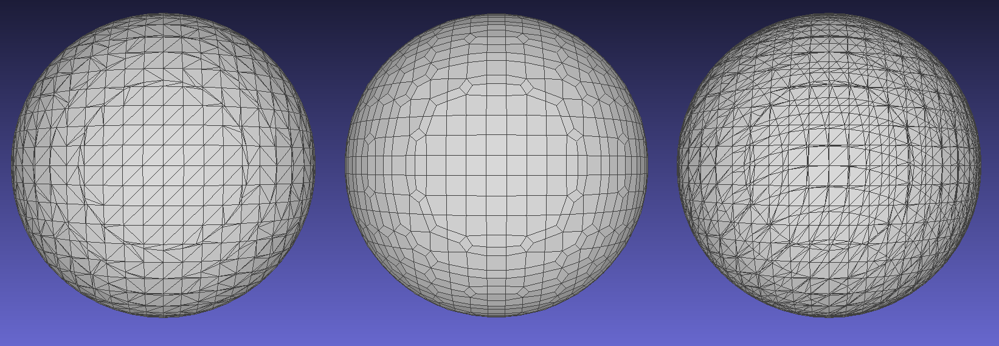

API
Quick Start
The easiest way to work with Meshing is with GeometryTypes. This package extends the mesh constructors from GeometryTypes.jl for convience.
The algorithms operate on a Function, AbstractArray, or SignedDistanceField and output a concrete AbstractMesh. For example:
using Meshing
using GeometryTypes
using LinearAlgebra: dot, norm
using FileIO
# Mesh an equation of sphere in the Axis-Aligned Bounding box starting
# at -1,-1,-1 and widths of 2,2,2 using Marching Cubes
m = GLNormalMesh(HyperRectangle(Vec(-1,-1,-1.), Vec(2,2,2.)), MarchingCubes()) do v
sqrt(sum(dot(v,v))) - 1
end
# save the Sphere as a PLY file
save("sphere.ply",m)For a full listing of concrete AbstractMesh types see GeometryTypes.jl mesh documentation.
Meshing Algorithms
Three meshing algorithms exist:
MarchingCubes()MarchingTetrahedra()NaiveSurfaceNets()
Each takes an optional iso and eps parameter, e.g. MarchingCubes(0.0,1e-6).
Here iso controls the offset for the boundary detection. By default this is set to 0. eps is the detection tolerance for a voxel edge intersection.
Users must construct an algorithm type and use it as an argument to a GeometryTypes mesh call or isosurface call.
Below is a comparison of the algorithms:
| Algorithm Type | Face Type | Unique Vertices | Performance | Interpolation |
|---|---|---|---|---|
| Naive Surface Nets | Quad | Yes | ~1x | Voxel Edge Weight |
| Marching Cubes | Triangle | No/Partial | 1x | Linear on Edge |
| Marching Tetrahedra | Triangle | Yes | 3x | Linear on Edge |
Visual Comparison: From left: Marching Cubes, Naive Surface Nets, Marching Tetrahedra

Meshing.MarchingCubes — Type.MarchingCubes(iso=0.0, eps=1e-3, reduceverts=true, insidepositive=false)
MarchingCubes(;iso=0.0, eps=1e-3, reduceverts=true, insidepositive=false)
MarchingCubes(iso)
MarchingCubes(iso,eps)Specifies the use of the Marching Cubes algorithm for isosurface extraction. This algorithm provides a good balance between performance and vertex count. In contrast to the other algorithms, vertices may be repeated, so mesh size may be large and it will be difficult to extract topological/connectivity information.
iso(default: 0.0) specifies the iso level to use for surface extraction.eps(default: 1e-3) is the tolerence around a voxel corner to ensure manifold mesh generation.reduceverts(default: true) if true will merge vertices within a voxel to reduce mesh size by around 30% and with slight performance improvement.insidepositive(default: false) set true if the sign convention inside the surface is positive, common for NRRD and DICOM data
Meshing.MarchingTetrahedra — Type.MarchingTetrahedra(iso=0.0, eps=1e-3, reduceverts=true, insidepositive=false)
MarchingTetrahedra(;iso=0.0, eps=1e-3, reduceverts=true, insidepositive=false)
MarchingTetrahedra(iso)
MarchingTetrahedra(iso,eps)Specifies the use of the Marching Tetrahedra algorithm for isosurface extraction. This algorithm has a roughly 2x performance penalty compared to Marching Cubes, and generates more faces. However, each vertex is guaranteed to not be repeated, making this algorithm useful for topological analysis.
isospecifies the iso level to use for surface extraction.epsis the tolerence around a voxel corner to ensure manifold mesh generation.reducevertsreserved for future use.insidepositivereserved for future use.
Meshing.NaiveSurfaceNets — Type.NaiveSurfaceNets(iso=0.0, eps=1e-3, reduceverts=true, insidepositive=false)
NaiveSurfaceNets(;iso=0.0, eps=1e-3, reduceverts=true, insidepositive=false)
NaiveSurfaceNets(iso)
NaiveSurfaceNets(iso,eps)Specifies the use of the Naive Surface Nets algorithm for isosurface extraction. This algorithm has a slight performance advantage in some cases over Marching Cubes. Each vertex is guaranteed to not be repeated (useful for topological analysis), however the algorithm does not guarantee accuracy and generates quad faces.
isospecifies the iso level to use for surface extraction.epsis the tolerence around a voxel corner to ensure manifold mesh generation.reducevertsreserved for future use.insidepositivereserved for future use.
Meshing.AbstractMeshingAlgorithm — Type.AbstractMeshingAlgorithmAbstract type to specify an algorithm for isosurface extraction. See:
- MarchingCubes
- MarchingTetrahedra
- NaiveSurfaceNets
Isosurface
isosurface is the common and generic API for isosurface extraction with any type of abstract vector/vertex/face type.
Meshing.isosurface — Function.function isosurface(sdf::AbstractArray{T, 3}, method::AbstractMeshingAlgorithm,
[ VertType = SVector{3,Float64} ], [ FaceType} = SVector{3, Int} ] ;
origin = SVector(-1.0,-1.0,-1.0), widths = SVector(2.0,2.0,2.0))
function isosurface(f::Function, method::AbstractMeshingAlgorithm,
[ VertType = SVector{3,Float64} ], [FaceType = SVector{3, Int} ] ;
origin = SVector(-1.0,-1.0,-1.0), widths = SVector(2.0,2.0,2.0)
samples=(24,24,24))`isosurface is the general interface to all isosurface extraction algorithms.
Returns: (Vector{VertType}, Vector{FaceType})
Defaults:
- VertType = SVector{3,Float64}
- FaceType = SVector{3, Int} ] ;
- origin = SVector(-1.0,-1.0,-1.0)
- widths = SVector(2.0,2.0,2.0)
- samples=(24,24,24) (function sampling only)
method must be an instance of an AbstractMeshingAlgorithm
If a subtype of AbstractArray is specified, the mesh will be default be centered at the origin between (-1,1) in each axis. This may be overridden by specifying a new origin and widths for the axis-aligned bounding box using keywords of the same names. For example if we want our vertices in the range of (0,1), we can specify origin=SVector(0,0,0) and widths = SVector(1,1,1).
If a function is specified, it will be uniformly sampled in each axis by the amount specified in samples. The function is called the a single argument of VertType.
Performance Tips:
- ensure
VertType,origin, andwidthsare all of the same type - ensure the element type of
VertTypeis the same as the specified isolevel
See also:
- MarchingCubes
- MarchingTetrahedra
- NaiveSurfaceNets
GeometryTypes
Meshing extends the mesh types in GeometryTypes for convience and use with visualization tools such as Makie and MeshCat. Any instance of an AbstractMesh may be called with arguements as follows:
(::Type{MT})(df::SignedDistanceField{3,ST,FT}, method::AbstractMeshingAlgorithm)::MT where {MT <: AbstractMesh, ST, FT}
(::Type{MT})(f::Function, h::HyperRectangle, samples::NTuple{3,T}, method::AbstractMeshingAlgorithm)::MT where {MT <: AbstractMesh, T <: Integer}
(::Type{MT})(f::Function, h::HyperRectangle, method::AbstractMeshingAlgorithm; samples::NTuple{3,T}=_DEFAULT_SAMPLES)::MT where {MT <: AbstractMesh, T <: Integer}
(::Type{MT})(volume::AbstractArray{T, 3}, method::AbstractMeshingAlgorithm; vargs...) where {MT <: AbstractMesh, T}With the GeometryTypes API, the bounding box is specified by a HyperRectangle.
Some notes on VertType and FaceType. Since it is common to simply call HomogenousMesh or GLNormalMesh, we have added promotion and default type logic to the GeometryTypes API to improve type stability and therefore performance. Both the element type of the volume, element type of the vertextype, and type of iso in the AbstractMeshingAlgorithm are all promoted. This also allows the use of auto differentiation tools on the isosurface construction.
If for example a HomogenousMesh is requested, the default types will be Point{3,Float64} and Face{3,Int} Similarly, a GLNormalMesh specifies Point{3, Float32} and Face{3, OffsetInteger{-1,UIn32}} so these these types will be used.
See: isosurface for the generic API.